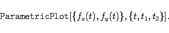
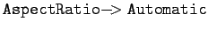

Inhalt Index DeskTop Bronstein

 Computeralgebrasysteme Graphik in Computeralgebrasystemen Graphik mit Mathematica
Computeralgebrasysteme Graphik in Computeralgebrasystemen Graphik mit Mathematica


Mathematica verfügt über eine spezielle Graphikanweisung, mit der Kurven in Parameterform dargestellt werden können. Der grundlegende Befehl dafür lautet:
|  | (20.88) |
Es besteht die Möglichkeit, mehrere Parameterkurven in eine Graphik zu zeichnen. Dazu ist in der Anweisung eine Liste von mehreren Kurven einzugeben. Mit der Option  zeichnet Mathematica die Kurven in ihrer natürlichen Form.
Die in den folgenden zwei Abbildungen dargestellten Parameterkurven archimedische Spirale und logarithmische Spirale sind mit den Eingaben
Mit